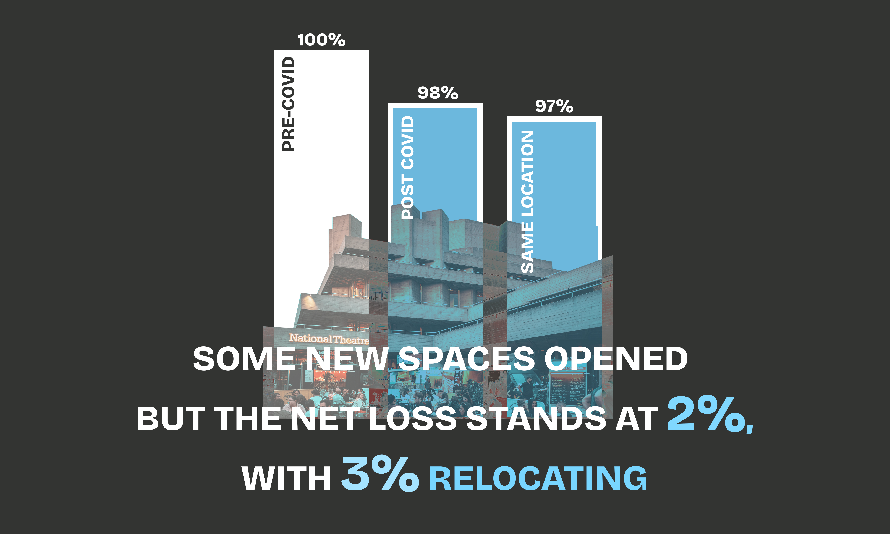

Cultural Cartographies
Our web-analysis of London’s cultural network, visualises gaps in cultural infrastructure and data through a spatial-temporal lens. While existing maps—such as the Cultural Infrastructure Map by the Mayor of London and the Culture and Place Data Explorer by Arts Council England—offer valuable static overviews, they fail to reflect how London’s cultural landscape has shifted over time, particularly in the wake of COVID-19. Cultural consumption spaces experienced the greatest losses, prompting a targeted investigation into how access to culture has changed across both space and time begging the research question - Is access to London's cultural network equitable across time and geography?


A natural starting point for exploring cultural networks is to map them geographically. To understand how accessible different types of cultural infrastructure are across London, we used the 15-minute city framework—focusing on whether people can reach venues within a walkable 1km radius. We grouped these venues by type (cinemas, galleries, theatres, etc.) to highlight the diversity of cultural infrastructure. Since the only verified datasets for cultural infrastructure in London come from the Greater London Authority (GLA) for the years 2018 and 2023, we began by mapping the 2018 data to use as a baseline, before comparing it with 2023 to spot trends and changes…
What we found was that nearly 38% of the venues listed in 2018 were missing in the 2023 dataset—not because they had physically closed, but due to changes in how the data was collected and categorised. Some venue types had been dropped, and others redefined, making the two datasets less comparable than they first appeared. This inconsistency meant that, rather than showing a clear trend over time, the maps were effectively illustrating two different versions of London’s cultural network. As a result, drawing reliable conclusions about long-term changes in cultural access became much more complex.
Our analysis, limited to 2023 data due to incompatibility with earlier years, compared London’s cultural infrastructure to that of other major cities using the World Cities Cultural Forum dashboard. Raw GLA data shows London as a cultural leader, but normalization by population and land area revealed underperformance, suggesting greater sector vulnerability. External reports confirmed this: the Music Venues Trust noted 125 venue closures in 2023, while museums saw an 8% post-pandemic decline. These trends highlight systemic fragility, challenging assumptions from the GLA’s 2023 dataset. Because the GLA dataset lacks long-term tracking, we brought in additional data sources—including scraped datasets—to get a more complete picture (see Our Process for more). This underscores the need for nuanced metrics and expanded datasets to accurately determine risks to the city’s cultural infrastructure.

Our spatio-temporal analysis of London’s cultural network, based on scraped consumption data (2017–2025), uncovered critical trends overlooked by official GLA datasets. While the GLA reported growth in libraries (claiming 347 by 2022), our findings revealed that both theatres and libraries experienced significant decline, exposing inconsistencies in how cultural infrastructure is recorded. Interestingly, community centres were the only type of cultural spaces focused on consumption that showed growth. This may indicate a move toward more locally-based cultural offerings, potentially taking priority over larger, more specialized venues. Borough-level revealed significant inequalities, with certain areas experiencing severe cultural depletion while others maintained better accessibility. These disparities challenge the reliability of static administrative data and emphasize the need for dynamic, detailed insights to better understand and support London’s cultural ecosystem.
Our comparative analysis of London’s boroughs integrated the Greater London Authority’s (GLA) 2023 cultural asset counts with OpenStreetMap (OSM) data tracking percentage changes between 2017 and 2025. While the datasets are not directly comparable—GLA provides absolute figures, whereas OSM reflects growth rates—their combined examination uncovered valuable insights. Havering, despite having among the fewest cultural assets, exhibited the highest growth rate, indicating promising potential for long-term sustainability. Meanwhile, access to community centres varied significantly across boroughs, with a disparity exceeding 100 venues between the most and least well-served areas—a gap likely to widen due to uneven investment.
Limitations include the exclusion of negative change rates (closures/declines) and a lack of normalization for area, population density, or income. Additionally, spatial mapping was not conducted, leaving geographic patterns unexplored. These gaps highlight the need for deeper, contextualized research to inform equitable cultural policy.
Our spatial analysis of London's cultural infrastructure reveals troubling disparities in access to vital community assets. By examining three key indicators—cinemas, community centers, and libraries—we uncover how raw data often obscures the true picture of cultural equity across boroughs.
Community Centers: City of London & Lewisham show strong per-capita access despite appearing underserved in raw counts whilst Camden's seemingly comprehensive coverage shrinks when adjusted for population density.
Cinemas: GLA data inaccuracies falsely erased all cinemas in Waltham Forest/Sutton.
Libraries: A clear decline in library provision emerged across most boroughs, with no discernible spatial pattern between high- and low-performing areas. However, this analysis was limited by its exclusion of public vs. private libraries (e.g., university libraries), some of which offer community access.
Understanding London’s cultural landscape required moving beyond traditional datasets. Our project began with the Cultural Infrastructure Data from the Greater London Authority (GLA), an official source mapping various cultural venues across the city. However, we quickly identified major gaps: some cultural spaces were missing, others were misclassified, and the data lacked detail over time.
To address this, we expanded our data collection. We used Overpass Turbo, a tool that allows us to extract publicly available data from OpenStreetMap (OSM)—a community-built map of the world. This helped us identify cultural venues that may have been overlooked or recently added, especially smaller or hyper-local spaces often missed by official surveys.
But collecting more data wasn’t enough. We recognised that no dataset is truly neutral. Who collects the data, what they choose to include, and how they categorise venues all influence the story that gets told. To respond to this, we adopted principles from Data Feminism—a framework that values multiple perspectives and challenges power imbalances in how data is produced and used. This meant combining quantitative data (like venue counts and access rates) with qualitative insights, such as interviews with cultural workers and community members.
Throughout this process, we remained committed to transparency. Not all data sources were directly comparable—for example, GLA figures count absolute venue numbers, while OSM shows growth rates. Still, by putting them side by side, we could uncover deeper patterns, inconsistencies, and blind spots in cultural provision.
Ultimately, our goal was not just to map infrastructure, but to highlight where access is unequal, and to support better policy decisions grounded in a fuller picture of London’s cultural life.